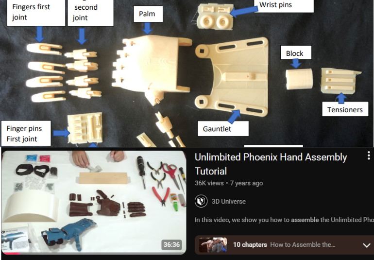
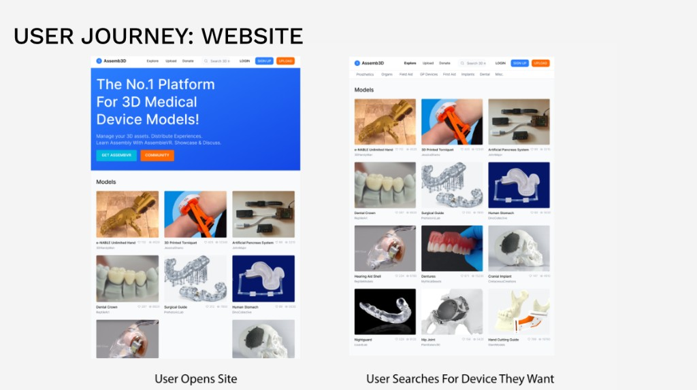
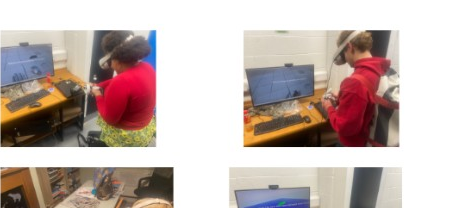
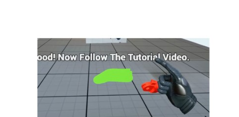
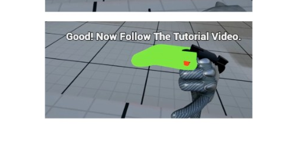

Back to work
Case study · VR · Learning
Assemb3D
A medical design project focused on improving prosthetic assembly learning through clearer, stepwise guidance. The concept combines web and VR touchpoints to help users understand part order, positioning, and connection with less ambiguity — toward a faster and more accessible learning pathway for real-world assembly and repair.


The Problem
Requiring a prosthetic is bad enough, without the additional barriers.
- In Ireland, public provision typically covers one initial prosthetic, creating major cost pressure as users grow and require replacements.
- Typical pathways can take up to 10 months from application to delivery.
- Nearly half of patients reject their first HSE prosthetic within the first year, highlighting a gap between provision and usable outcomes.

The Moment
How can we help overcome barriers of cost and time for amputees?
- Existing 3D-print solutions are promising but still institution-led and difficult for non-technical users to adopt at home.
- Benchmarked tools such as e-NABLE’s Unlimited Hand reduce manufacturing cost but still leave a steep assembly learning curve.
- In testing, users struggled to complete assembly after watching existing tutorials, revealing a clear guidance and comprehension gap.
Solution Concept
Where does Assemb3D step in?

User Journey: Website
From open to search to start.


User Tests · VR
Where were people going wrong in the user tests?

From my VR user tests, the recurring issues I found were:
- Workshop textures made the UI confusing.
- Users weren’t sure when they had picked up the piece.
- Users who figured out the joint didn’t want to rebuild the whole thing.


Clinical Learning Rationale
Why VR over video?
- The interaction model prioritises learning-by-doing, which supports retention and confidence in procedural tasks.
- The flow presents one action at a time, highlights the next correct component, and confirms progress with visual / haptic feedback.
- Users can restart from the step they failed on, reducing cognitive load and improving task completion compared with linear tutorials.
Prototype
Demo video
Up next